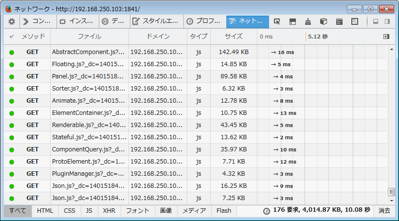

- [ Prev ]
- [ Next ]
- [ JavaScript ]
最近、ExtJSを勉強しているのですが、ExtJS 4.2 になって事実上、Sencha Cmdによる開発方式が前提となりました。
そこで、ExtJS 4.2 を使ってSencha Cmdを触ってみましたので、練習メモとして公開します。
- ExtJS, Sencha Cmd
- 公式ドキュメント
- http://docs.sencha.com/extjs/
- ※アクセスすると2014-05時点では 4.2.2 のドキュメントにジャンプします。ExtJSのzipパッケージの中にはそのバージョンのドキュメントが同梱されてますので、そちらをローカルで参照しても良いと思います。
- http://docs.sencha.com/extjs/
今回の実験環境：
Ubuntu 12.04 LTS (64bit) ext-4.2.1.883 (GPL版) Sencha Cmd v4.0.4.84 Ruby (rbenvにて ruby 2.0.0p481 をインストール済み) /work/www 以下をDocumentRootとしてApacheHTTPDで公開 /work/www/ext-4.2.1.883 にExtJSを展開済み /work/devtools 以下にSencha Cmdをインストール Webブラウザによる動作確認：Firefox 29 on Win7 Pro 日本語版
サンプルコード : https://github.com/msakamoto-sf/extjs42-senchacmdv4-exercise
- Sencha Cmd のインストール
- Sencha Cmd でアプリのひな形を生成してみる (sencha generate app)
- Sencha Cmd でアプリをビルドしてみる (sencha app build)
- ビルドする前に、index.htmlで動作を確認してみる。(sencha web start/stop)
- ビルドしてみる : sencha app build, sencha app build testing
- ビルド途中の"phantomjs: error while loading shared libraries: libfontconfig.so.1: cannot open shared object file: No such file or directory"
- ビルド成果物の確認(production)
- テスト用のビルド (sencha app build testing)
- ビルド成果物の確認(testing)
- gitに登録
- ★★ポイント★★ : ビルドされたindex.htmlからは相対パスでCSSとJSがロードされるので、他のパスからも正常に動作する。
- "sencha generate app" で生成されたデフォルトのスケルトンアプリを動かしてみる
- ★★ポイント★★ : "${app.dir/bootstrap.css" は最後にビルドしたenvironmentの内容が反映される。}
- 生成されたスケルトンコードのポイント
- "sencha generate view" でViewを追加してみる
- ★★ポイント1★★: ExtJSコンポーネントの参照とSencha CmdによるCSS生成について
- ★★ポイント2★★: ExtJSコンポーネントが使用する画像ファイルの相対パス参照について
- build/temp/ 以下を .gitignore に追加
- 異なるディレクトリ階層上から"resources"以下のCSSをロードしてみる
- index.htmlがロードするファイルを ext-all-dev.js に変更してみる
- senchaコマンドで生成されたファイルと ".sencha/app/codegen.json" について
- "sencha generate" でコンポーネント名を間違えるとどうなるか？
- ビルドしたファイルを削除(sencha ant clean)
Sencha Cmd のインストール
SenchaCmd-4.0.4.84-linux-x64.run.zip を公式サイトからダウンロードし、実験環境にUP.
$ ls SenchaCmd-4.0.4.84-linux-x64.run.zip $ unzip SenchaCmd-4.0.4.84-linux-x64.run.zip Archive: SenchaCmd-4.0.4.84-linux-x64.run.zip inflating: SenchaCmd-4.0.4.84-linux-x64.run $ ls SenchaCmd-4.0.4.84-linux-x64.run SenchaCmd-4.0.4.84-linux-x64.run.zip $ file SenchaCmd-4.0.4.84-linux-x64.run SenchaCmd-4.0.4.84-linux-x64.run: ELF 64-bit LSB executable, x86-64, version 1 (GNU/Linux), statically linked, stripped
SenchaCmd-4.0.4.84-linux-x64.run には実行権限がついてなかったので、chmodで追加して実行。長いライセンス表示と確認のあとインストール先を聞かれるので、"/work/devtools" を指定。
$ chmod +x SenchaCmd-4.0.4.84-linux-x64.run $ ./SenchaCmd-4.0.4.84-linux-x64.run ---------------------------------------------------------------------------- Welcome to the Sencha Cmd Setup Wizard. The Sencha Cmd utilities are used to package and deploy Sencha applications. ---------------------------------------------------------------------------- Please read the following License Agreement. You must accept the terms of this agreement before continuing with the installation. Press [Enter] to continue : Sencha Cmd Copyright (c) 2012-2013 Sencha Inc. All rights reserved. licensing@sencha.com Commercial License --------------------------------------------------------------------------------- --------- Sencha Cmd is licensed commercially for free. Please visit http://www.sencha.com/legal/sencha-tools-software-license-agreement for more details. Third Party Content --------------------------------------------------------------------------------- --------- The following third party software is distributed with Sencha Cmd and is provided under other licenses and/or has source available from other locations. WebKit (LGPL) Copyright (C) 1991 Free Software Foundation, Inc Site: http://www.webkit.org/ License: http://www.webkit.org/coding/lgpl-license.html YUI Compressor (BSD licensed) included in Sencha Touch build tools Copyright © Press [Enter] to continue : ...(しばらく、ライセンス確認が続きます)... Do you accept this license? [y/n]: y ---------------------------------------------------------------------------- Please specify the directory where Sencha Cmd will be installed. Installation Directory [/home/msakamoto/bin]: /work/devtools ---------------------------------------------------------------------------- Setup is now ready to begin installing Sencha Cmd on your computer. Do you want to continue? [Y/n]: Y ---------------------------------------------------------------------------- Please wait while Setup installs Sencha Cmd on your computer. Installing 0% ______________ 50% ______________ 100% ######################################### ---------------------------------------------------------------------------- Setup has finished installing Sencha Cmd on your computer.
ここで .bashrc にPATHを追加しようとしてみてみたら、既に追加されてました。
... export SENCHA_CMD_3_0_0="/work/devtools/Sencha/Cmd/4.0.4.84" export PATH=/work/devtools/Sencha/Cmd/4.0.4.84:$PATH
ログインし直して "sencha which" コマンドを実行してみると、バージョン情報とインストール先が表示されます。
msakamoto@dev1-u1204lts-x64:~$ sencha which Sencha Cmd v4.0.4.84 /work/devtools/Sencha/Cmd/4.0.4.84/
Sencha Cmd でアプリのひな形を生成してみる (sencha generate app)
"sencha generate app" でアプリのひな形を生成してみます。
msakamoto@dev1-u1204lts-x64:~$ cd /work/www msakamoto@dev1-u1204lts-x64:/work/www$ mkdir extjs-tests msakamoto@dev1-u1204lts-x64:/work/www$ cd extjs-tests/ msakamoto@dev1-u1204lts-x64:/work/www/extjs-tests$ sencha -sdk /work/www/ext-4.2.1.883 generate app MyApp t1
"/work/www/extjs-tests/t1" の下に、アプリのひな形が生成されます。
sencha generate app での★★ポイント★★
"-sdk" オプションで、ExtJSのインストールパスを指定する必要があります。ExtJSで使うJSやテーマファイルなどを、ごっそりと "ext" ディレクトリにコピーするためです。
コンソールログ
msakamoto@dev1-u1204lts-x64:/work/www/extjs-tests$ sencha -sdk /work/www/ext-4.2.1.883 generate app MyApp t1 Sencha Cmd v4.0.4.84 [INF] [INF] init-plugin: [INF] [INF] -before-generate-workspace: [INF] [INF] cmd-root-plugin.init-properties: [INF] [INF] init-properties: [INF] [INF] init-sencha-command: [INF] [INF] init: [INF] [INF] generate-workspace-impl: [INF] [echo] generating into /work/www/extjs-tests/t1 from /work/devtools/Sencha/Cmd/4.0.4.84/templates/workspace [INF] [mkdir] Created dir: /work/www/extjs-tests/t1/packages [INF] [INF] cmd-root-plugin.copy-framework-to-workspace-impl: [INF] [propertyfile] Updating property file: /work/www/extjs-tests/t1/.sencha/workspace/sencha.cfg [INF] [INF] copy-framework-to-workspace-impl: [INF] [copy] Copying 4522 files to /work/www/extjs-tests/t1/ext [INF] [copy] Copying 89 files to /work/www/extjs-tests/t1/ext/src/ux [INF] [propertyfile] Updating property file: /work/www/extjs-tests/t1/.sencha/workspace/sencha.cfg [INF] [INF] copy-framework-to-workspace: [INF] [INF] generate-workspace: [INF] [INF] -after-generate-workspace: [INF] [INF] init-plugin: [INF] [INF] cmd-root-plugin.init-properties: [INF] [INF] init-properties: [INF] [INF] init-sencha-command: [INF] [INF] init: [INF] [INF] before-upgrade: [INF] [INF] generate-app-impl: [INF] [INF] generate-starter-app: [INF] [mkdir] Created dir: /work/www/extjs-tests/t1/resources [INF] [mkdir] Created dir: /work/www/extjs-tests/t1/overrides [INF] [mkdir] Created dir: /work/www/extjs-tests/t1/sass/src [INF] [mkdir] Created dir: /work/www/extjs-tests/t1/sass/var [INF] [mkdir] Created dir: /work/www/extjs-tests/t1/sass/etc [INF] [x-property-file] Updating property file: /work/www/extjs-tests/t1/.sencha/app/sencha.cfg [INF] [INF] after-upgrade: [INF] Saving certificate as /work/devtools/Sencha/Cmd/repo/pkgs/cert.json [INF] Saving private key as /work/devtools/Sencha/Cmd/repo/.sencha/repo/private-key.json [INF] [INF] init-plugin: [INF] [INF] cmd-root-plugin.init-properties: [INF] [INF] init-properties: [INF] [INF] init-sencha-command: [INF] [INF] init: [INF] [INF] app-refresh: [INF] [echo] Refreshing app at /work/www/extjs-tests/t1 [INF] [INF] app-refresh-impl: [INF] [INF] -before-init-local: [INF] [INF] -init-local: [INF] [INF] -after-init-local: [INF] [INF] init-local: [INF] [INF] find-cmd-in-path: [INF] [INF] find-cmd-in-environment: [INF] [INF] find-cmd-in-shell: [INF] [INF] init-cmd: [INF] [echo] Using Sencha Cmd from /work/devtools/Sencha/Cmd/4.0.4.84 for /work/www/extjs-tests/t1/build.xml [INF] [INF] -before-init: [INF] [INF] -init: [INF] Initializing Sencha Cmd ant environment [INF] Adding antlib taskdef for com/sencha/command/compass/ant/antlib.xml [INF] [INF] -after-init: [INF] [INF] -before-init-defaults: [INF] [INF] -init-defaults: [INF] [INF] -after-init-defaults: [INF] [INF] -init-compiler: [INF] [INF] init: [INF] [INF] refresh: [INF] [INF] -before-refresh: [INF] [INF] -init: [INF] [INF] -init-compiler: [INF] [INF] [INF] -detect-app-build-properties: [INF] Loading app json manifest... [INF] Loading classpath entry /work/www/extjs-tests/t1/ext/src [INF] Loading classpath entry /work/www/extjs-tests/t1/ext/packages/ext-theme-base/src [INF] Loading classpath entry /work/www/extjs-tests/t1/ext/packages/ext-theme-base/overrides [INF] Loading classpath entry /work/www/extjs-tests/t1/ext/packages/ext-theme-neutral/src [INF] Loading classpath entry /work/www/extjs-tests/t1/ext/packages/ext-theme-neutral/overrides [INF] Loading classpath entry /work/www/extjs-tests/t1/ext/packages/ext-theme-classic/src [INF] Loading classpath entry /work/www/extjs-tests/t1/ext/packages/ext-theme-classic/overrides [INF] Loading classpath entry /work/www/extjs-tests/t1/app [INF] Loading classpath entry /work/www/extjs-tests/t1/app.js [INF] Loading classpath entry /work/www/extjs-tests/t1/build/temp/production/MyApp/sencha-compiler/app [INF] Loading classpath entry /work/www/extjs-tests/t1/build/temp/production/MyApp/sencha-compiler/app [INF] Concatenating output to file /work/www/extjs-tests/t1/build/temp/production/MyApp/sencha-compiler/cmd-packages.js [INF] Adding external reference : @full-page => @overrides [INF] Loading classpath entry /work/www/extjs-tests/t1/build/temp/production/MyApp/sencha-compiler/cmd-packages.js [INF] Adding external reference : Ext.util.Observable => /work/www/extjs-tests/t1/build/temp/production/MyApp/sencha-compiler/cmd-packages.js [INF] [INF] -refresh-app: [INF] Appending concatenated output to file /work/www/extjs-tests/t1/bootstrap.js [INF] Appending concatenated output to file /work/www/extjs-tests/t1/bootstrap.js [INF] Appending concatenated output to file /work/www/extjs-tests/t1/bootstrap.js [INF] Appending concatenated output to file /work/www/extjs-tests/t1/bootstrap.js [INF] Appending concatenated output to file /work/www/extjs-tests/t1/bootstrap.js [INF] Appending content to /work/www/extjs-tests/t1/bootstrap.js [INF] Appending content to /work/www/extjs-tests/t1/bootstrap.json [INF] [INF] -refresh: [INF] [INF] -after-refresh: [INF] [INF] after-upgrade: [INF] [INF] generate-app: [INF] [INF] -after-generate-app: [INF] [x-property-file] Updating property file: /work/www/extjs-tests/t1/.sencha/app/sencha.cfg
生成されたファイル・ディレクトリの★★ポイント★★
上記コマンドで "t1" というディレクトリが作成され、その中にアプリのソースツリーが生成されます。以降、本記事では "/work/www/extjs-tests/t1" ディレクトリを、".sencha/app/sencha.cfg" 中の記述に従い "${app.dir}" と表記します。
"${app.dir}" 直下のファイル・ディレクトリ構成は以下のようになっています。
.sencha/ app/ app.js app.json bootstrap.css bootstrap.js bootstrap.json build/ build.xml ext/ index.html overrides/ packages/ Readme.md resources/ sass/
これらの主なディレクトリ構成については公式ドキュメントにも記載があります。ここでは、本記事の内容に関連していたり、開発者が編集して良いのか / 編集してはいけないのか、について以下のように紹介します。
| ${app.dir}以下 | 編集可不可 | 説明 |
|---|---|---|
| .sencha/app/sencha.cfg | 編集可 | Sencha Cmdが使用する主な設定ファイル |
| .sencha/app/codegen.json | 不明 | "sencha generate" で生成したファイルのメタ情報をトラッキングしている。 |
| index.html | 編集可 | エントリーポイントで、ファイル名は app.json で変更可能。 特殊なコメントブロックを埋め込むことで、ビルド時に最終的なjsやcssを参照するように書き換えられる。 |
| app.js | 編集可 | index.html から参照され、"Ext.application()" を呼び出している。 |
| app.json | 編集可 | Sencha Cmd が参照するアプリの設定ファイル。最終的なHTML + JavaScriptアプリには含まれない。 |
| bootstrap.css | 編集不可 | index.html から参照され、テーマのCSSファイルを "@import" により取り込んでいる。 後述するが、直前にビルドされたテーマのCSSへの相対パスに自動的に置換されるため、編集不可。 |
| bootstrap.js | 編集不可 | index.html から参照され、ExtJSに含まれているクラス名や、アプリが使うクラス名などの一覧と自動ロードのJSが含まれている。 "sencha app refresh" により自動生成される。 最終的なビルド出力には、このファイルは含まれない。 |
- 上記で "編集不可" と記載したのは、ファイル中に "should NOT be edited" とあったファイルになります。
- "編集可" と記載したファイルについても、将来のアップグレード時の注意点などがコメントで書かれてたりするので、詳細は自分で確認してみてください。
- codegen.jsonについてですが、後述しますがフォーマット自体は普通のJSONファイルなので、"sencha generate" で名前を間違って指定してしまった場合など、ある程度開発者による手動調整は受け付けてくれていると思われます。
★★ポイント★★ : ext/ext-xxxx.js のバリエーションについて
"${app.dir}/ext" ディレクトリの下には、ExtJSの本体ファイルが入ってます。 ただし、似たような名前のJSファイルがいくつかあり、混乱します。
ファイル名構成： "ext" + 内容種類 + ビルド種類 + ".js"
"内容種類"
- 無印(ext.js, ext-debug.js など) : ExtJSクラスシステムとLoader、最低限度のコンポーネント。index.htmlではデフォルトでこれの"-dev"バージョン、ext-dev.js を参照している。
- "-all" : 全部入り。ExtJSを単体で使うぶんにはこれでも良い。ただしRight To Leftのコンポーネントは含まれない。
- "-all-rtl" : 4.2で追加された、Right To Left のコンポーネントを含む全部入り。
"ビルド種類"
- 無印(ext.js, ext-all.js など) : minifyされたバージョン。リリース環境向け。
- "-debug" : minifyされていないが、ドキュメントやコメントも削除されたバージョン。
- "-debug-w-comments" : minifyされておらず、ドキュメントやコメントも残っているバージョン。
- "-dev" : "-debug-w-comments" に加え、deprecatedなAPIを使った場合などにJSコンソールにwarningログを出してくれる。
Right To Leftを考慮しなければ、開発時にはext-all-dev.jsを使い、リリースにはext-all.jsを使えば良いと思われます。
ただし、Sencha Cmdで生成したアプリの場合、基本的には最終的に app.js にExtのコンポーネントやアプリで開発したファイルがすべて統合されてしまいますので、あまりこのへんの事は気にする必要はありません。
とはいえ、"sencha generate app" が生成したデフォルトのindex.htmlでは ext-dev.js を使っているため、コンポーネントを一個ずつ個別にロードする事となり非常に遅いです。後述しますが、ext-all-dev.js を使うように調整することは可能なので、その辺は随時、実験して見て下さい。
参考：
- extjs - ext-all-debug.js vs ext-all-dev.js - Stack Overflow
- Ext JS 4.2 Betaが利用できるようになりました。 | 株式会社ゼノフィ
- http://www.xenophy.com/javascript/5148
- Right To Left コンポーネントの追加について記載されてます。
- http://www.xenophy.com/javascript/5148
生成されたファイル・ディレクトリの中身を見てみる（抜粋）
いくつか、生成されたファイル・ディレクトリの中身を見てみます。
"app" ディレクトリ
ExtJS MVCアプリケーションのソースの置き場所となります。簡単なスケルトンソースが生成されています。
msakamoto@dev1-u1204lts-x64:/work/www/extjs-tests/t1$ tree app
app
├── Application.js
├── controller
│ ├── Main.js
│ └── Readme.md
├── model
│ └── Readme.md
├── Readme.md
├── store
│ └── Readme.md
└── view
├── Main.js
├── Readme.md
└── Viewport.js
"sass" ディレクトリ
まだテーマ関連調べてないのでわからないんですが、多分テーマ関連じゃないかなーと・・・
msakamoto@dev1-u1204lts-x64:/work/www/extjs-tests/t1$ tree sass/ sass/ ├── config.rb ├── etc ├── example │ ├── bootstrap.css │ ├── custom.js │ ├── render.js │ └── theme.html ├── src └── var
index.html
"<x-compile>" や "<x-bootstrap>" など、senchaのビルドシステムが自動で参照・置換するブロックが埋め込まれています。この状態のindex.htmlを参照しても、app.jsやboostrap.css, bootstrap.jsが適切に調整されているおかげで、ちゃんと動作します。
<!DOCTYPE HTML> <html> <head> <meta charset="UTF-8"> <title>MyApp</title> <!-- <x-compile> --> <!-- <x-bootstrap> --> <link rel="stylesheet" href="bootstrap.css"> <script src="ext/ext-dev.js"></script> <script src="bootstrap.js"></script> <!-- </x-bootstrap> --> <script src="app.js"></script> <!-- </x-compile> --> </head> <body></body> </html>
app.json
sencha のビルドシステムが参照する設定ファイルですので、アプリの動作には関連しません。Senchaのpackageシステムの設定などが入ってくるようです。
{
"name": "MyApp",
"requires": [
],
"id": "97333d8b-3cca-4f30-aa90-d40a2910b45e"
}
app.js
"Ext.application()"を呼び出すjsファイルになっています。ただ、これの実体は"extend"にも指定されている "${app.dir}/app/Application.js" になりますので、細かい実体はそちらで作りこんでくのだと思われます。
なお、autoCreateViewportがtrueになってますので、 "${app.dir}/app/view/Viewport.js" が自動的に読み込まれ、スケルトンの画面を表示する仕組みになってます。
/*
This file is generated and updated by Sencha Cmd. You can edit this file as
needed for your application, but these edits will have to be merged by
Sencha Cmd when upgrading.
*/
Ext.application({
name: 'MyApp',
extend: 'MyApp.Application',
autoCreateViewport: true
});
${app.dir}/app/Application.js
特に何もない、スケルトンのクラスファイルになってます。
msakamoto@dev1-u1204lts-x64:/work/www/extjs-tests/t1$ more app/Application.js
Ext.define('MyApp.Application', {
name: 'MyApp',
extend: 'Ext.app.Application',
views: [
// TODO: add views here
],
controllers: [
// TODO: add controllers here
],
stores: [
// TODO: add stores here
]
});
bootstrap.js
このファイルはSencha Cmdが自動生成するので、編集不可のようです。MVCのJSファイルを追加した後 "sencha app refresh" すると、ディレクトリをスキャンして自動的に追加してくれます。
/**
* This file is generated by Sencha Cmd and should NOT be edited. It is
* provided to support globbing requires, custom xtypes, and other
* metadata-driven class system features
*/
Ext.Loader.addClassPathMappings({
"Ext": "ext/src",
"Ext.Msg": "ext/src/window/MessageBox.js",
"Ext.rtl.EventObjectImpl": "ext/src/rtl/EventObject.js",
"MyApp": "app"
});
Ext.ClassManager.addNameAlternateMappings({
"Ext.AbstractComponent": [],
"Ext.AbstractManager": [],
"Ext.AbstractPlugin": [],
"Ext.Action": [],
"Ext.Ajax": [],
"Ext.Component": [],
"Ext.ComponentLoader": [],
"Ext.ComponentManager": [
"Ext.ComponentMgr"
],
...
"Ext.window.Window": [
"widget.window"
],
"MyApp.Application": [],
"MyApp.controller.Main": [],
"MyApp.view.Main": [
"widget.app-main"
],
"MyApp.view.Viewport": []
});
Ext.setVersion("ext-theme-base", "4.2.1");
Ext.setVersion("ext-theme-classic", "4.2.1");
Ext.setVersion("ext-theme-neutral", "4.2.1");
...
bootstrap.json
これもsenchaのビルドシステムが参照する設定ファイルのようで、こちらは編集不可のようです。カスタマイズはapp.jsonに書いてね、というコメントが入ってます。
/**
* This file is generated by Sencha Cmd and should NOT be edited. It is a
* combination of content from app.json, and all required package's package.json
* files. Customizations should be placed in app.json.
*/
{"id":"97333d8b-3cca-4f30-aa90-d40a2910b45e","js":[],"css":[]}
bootstrap.css
index.htmlから参照されています。生成直後では "ext/packages/" の下のテーマファイルのcssを参照しています。
後述しますが、最後にビルドしたCSSファイルを参照するよう自動的に置換されますので、編集不可と考えられます。
/** * This file is generated by Sencha Cmd and should NOT be edited. It will * redirect to the most recently built css file for the application to * support development time inspection of css output. */ @import 'ext/packages/ext-theme-classic/build/resources/ext-theme-classic-all.css';
.sencha/app/sencha.cfg
Sencha CmdはAntを使ってまして、それが参照するプロパティファイルとなってます。Antの設定ファイルらしく、"${...}" による設定値の置換が使われてます。
# The name of the application
app.name=MyApp
# The name of the framework used by the application (ext / touch)
app.framework=ext
# The path(s) to application javascript sources (comma separated)
app.classpath=${app.dir}/app,${app.dir}/app.js
# Output location for application build artifacts
app.build.dir=${workspace.build.dir}/${app.name}
# The root namespace to use when mapping scss resources to js classes
# in the sass/src and sass/var directories
app.sass.namespace=MyApp
# Path to sass rule definition files corresponding to JavaScript classes.
app.sass.srcpath=${app.dir}/sass/src
# Path to sass variable definition files corresponding to JavaScript classes.
app.sass.varpath=${app.dir}/sass/var
# Path to sass function and mixin files.
app.sass.etcpath=${app.dir}/sass/etc/all.scss
# Path to extra ruby files to include into the generated sass config.rb,
# <approot>/sass/config.rb will be included automatically if present and does
# not need to be specified.
# app.sass.rubypath=
# The name of the package containing the theme scss for the app
app.theme=ext-theme-classic
# This property can be modified to change the input and output page file
# used in the compile command. (eg: index.aspx, index.jsp ... )
app.page.name=index.html
# the input page file
app.page.file=${app.dir}/${app.page.name}
# this property specifies a comma separated list of paths containing
# resources to copy to the build directory
app.resource.paths=${app.dir}/resources
#==============================================================================
# Custom Properties - Place customizations below this line to avoid merge
# conflicts with newer versions
app.framework.version=4.2.1.883
app.cmd.version=4.0.4.84
.sencha/workspace/sencha.cfg
こちらは、workspaceという単位での設定ファイルになります。今回は特にworkspaceについては採り上げません。
#Sat, 31 May 2014 15:28:13 +0900
# -----------------------------------------------------------------------------
# This file contains configuration options that apply to all applications in
# the workspace. By convention, these options start with "workspace." but any
# option can be set here. Options specified in an application's sencha.cfg will
# take priority over those values contained in this file. These options will
# take priority over configuration values in Sencha Cmd or a framework plugin.
# -----------------------------------------------------------------------------
# This configuration property (if set) is included by default in all compile
# commands executed according to this formulation:
#
# sencha compile -classpath=...,${framework.classpath},${workspace.classpath},${app.classpath}
#workspace.classpath=
#------------------------------------------------------------------------------
# This is the folder for build outputs in the workspace
workspace.build.dir=${workspace.dir}/build
#------------------------------------------------------------------------------
# This folder contains all generated and extracted packages.
workspace.packages.dir=${workspace.dir}/packages
workspace.theme.dir=${workspace.packages.dir}/${args.themeName}
# =============================================================================
# Customizations go below this divider to avoid merge conflicts on upgrade
# =============================================================================
workspace.cmd.version=4.0.4.84
ext.dir=${workspace.dir}/ext
Sencha Cmd でアプリをビルドしてみる (sencha app build)
アプリの生成が終わりましたので、実際にビルドしてみます。
ここで、ExtJSのドキュメントの "Getting Started with ExtJS 4" にあるように、"${app.dir}/app/Application.js" を以下のように、launch()でViewportを直接生成し、HTMLをベタ書きして終わるだけの形にしておきます。（単純化して、すぐに確認できる状態にしておきます。）
${app.dir}/app/Application.js:
Ext.define('MyApp.Application', { name: 'MyApp', extend: 'Ext.app.Application', launch: function() { Ext.create('Ext.container.Viewport', { layout: 'fit', items: [ { title: 'Hello Ext', html : 'Hello! Welcome to Ext JS.' } ] }); } });
ビルドする前に、index.htmlで動作を確認してみる。(sencha web start/stop)
ローカルで簡単にWebサーバを立ちあげたい場合に、"sencha web start" で簡単に「コマンド実行時のカレントディレクトリを」DocumentRootとしてWebサーバを起動できます。実体はJettyを使っているようです。
デフォルトではTCPポート番号1841番をlistenします。
msakamoto@dev1-u1204lts-x64:/work/www/extjs-tests/t1$ sencha web start
Sencha Cmd v4.0.4.84
[INF] Starting shutdown listener socket
[INF] Listening for stop requests on: 56801
[INF] Mapping http://localhost:1841/ to ....
[INF] Starting http://localhost:1841
[INF] jetty-8.1.7.v20120910
[INF] NO JSP Support for /, did not find org.apache.jasper.servlet.JspServlet
[INF] started o.e.j.w.WebAppContext{/,file:/work/www/extjs-tests/t1/}
[INF] started o.e.j.w.WebAppContext{/,file:/work/www/extjs-tests/t1/}
[INF] Started SelectChannelConnector@0.0.0.0:1841
実際にアクセスしてみると、以下のように Application.js に書いたとおりに表示されました。
また、Firefox29の開発ツールの"ネットワーク"で通信状況を確認すると、以下のようにコンポーネントが１つずつ、ロードされていました。このため、表示されるまでに数十秒以上待たされます。

起動したWebサーバを停止するには、Ctrl-Cで強制終了するか、別のターミナルを開いて "sencha web stop" を実行します。
msakamoto@dev1-u1204lts-x64:/work/www/extjs-tests/t1$ sencha web stop Sencha Cmd v4.0.4.84 [INF] Contacting http://localhost:1841/.stop for shutdown port [INF] Shutdown port is 56801 [INF] Sending shutdown [INF] Shutdown away
ビルドしてみる : sencha app build, sencha app build testing
ではビルドしてみます。
msakamoto@dev1-u1204lts-x64:/work/www/extjs-tests/t1$ sencha app build Sencha Cmd v4.0.4.84 [INF] [INF] init-plugin: [INF] [INF] cmd-root-plugin.init-properties: [INF] [INF] init-properties: [INF] [INF] init-sencha-command: [INF] [INF] init: [INF] [INF] app-build-impl: [INF] [INF] -before-init-local: [INF] [INF] -init-local: [INF] [INF] -after-init-local: [INF] [INF] init-local: [INF] [INF] find-cmd-in-path: [INF] [INF] find-cmd-in-environment: [INF] [INF] find-cmd-in-shell: [INF] [INF] init-cmd: [INF] [echo] Using Sencha Cmd from /work/devtools/Sencha/Cmd/4.0.4.84 for /work/www/extjs-tests/t1/build.xml [INF] [INF] -before-init: [INF] [INF] -init: [INF] Initializing Sencha Cmd ant environment [INF] Adding antlib taskdef for com/sencha/command/compass/ant/antlib.xml [INF] [INF] -after-init: [INF] [INF] -before-init-defaults: [INF] [INF] -init-defaults: [INF] [INF] -after-init-defaults: [INF] [INF] -init-compiler: [INF] [INF] init: [INF] [INF] -before-build: [INF] [INF] refresh: [INF] [INF] -before-refresh: [INF] [INF] -init: [INF] [INF] -init-compiler: [INF] [INF] -detect-app-build-properties: [INF] Loading app json manifest... [INF] Loading classpath entry /work/www/extjs-tests/t1/ext/src [INF] Loading classpath entry /work/www/extjs-tests/t1/ext/packages/ext-theme-base/src [INF] Loading classpath entry /work/www/extjs-tests/t1/ext/packages/ext-theme-base/overrides [INF] Loading classpath entry /work/www/extjs-tests/t1/ext/packages/ext-theme-neutral/src [INF] Loading classpath entry /work/www/extjs-tests/t1/ext/packages/ext-theme-neutral/overrides [INF] Loading classpath entry /work/www/extjs-tests/t1/ext/packages/ext-theme-classic/src [INF] Loading classpath entry /work/www/extjs-tests/t1/ext/packages/ext-theme-classic/overrides [INF] Loading classpath entry /work/www/extjs-tests/t1/app [INF] Loading classpath entry /work/www/extjs-tests/t1/app.js [INF] Loading classpath entry /work/www/extjs-tests/t1/build/temp/production/MyApp/sencha-compiler/app [INF] Loading classpath entry /work/www/extjs-tests/t1/build/temp/production/MyApp/sencha-compiler/app [INF] Concatenating output to file /work/www/extjs-tests/t1/build/temp/production/MyApp/sencha-compiler/cmd-packages.js [INF] Adding external reference : @full-page => @overrides [INF] Loading classpath entry /work/www/extjs-tests/t1/build/temp/production/MyApp/sencha-compiler/cmd-packages.js [INF] Adding external reference : Ext.util.Observable => /work/www/extjs-tests/t1/build/temp/production/MyApp/sencha-compiler/cmd-packages.js [INF] [INF] -refresh-app: [INF] Appending concatenated output to file /work/www/extjs-tests/t1/bootstrap.js [INF] Appending concatenated output to file /work/www/extjs-tests/t1/bootstrap.js [INF] Appending concatenated output to file /work/www/extjs-tests/t1/bootstrap.js [INF] Appending concatenated output to file /work/www/extjs-tests/t1/bootstrap.js [INF] Appending concatenated output to file /work/www/extjs-tests/t1/bootstrap.js [INF] Appending content to /work/www/extjs-tests/t1/bootstrap.js [INF] Appending content to /work/www/extjs-tests/t1/bootstrap.json [INF] [INF] -refresh: [INF] [INF] -after-refresh: [INF] [INF] resolve: [INF] [INF] js: [INF] [INF] -before-js: [INF] [INF] -init: [INF] [INF] -init-compiler: [INF] [INF] -detect-app-build-properties: [INF] [INF] -compile-js: [INF] Loading classpath entry /work/devtools/Sencha/Cmd/4.0.4.84/plugins/src [INF] Loading classpath entry /work/devtools/Sencha/Cmd/4.0.4.84/plugins/ext/src [INF] Loading classpath entry /work/devtools/Sencha/Cmd/4.0.4.84/plugins/ext/4.2/src [INF] Building optimized concatenated output.. [INF] Compressing data with YuiJavascriptCompressor [INF] Concatenating output to file /work/www/extjs-tests/t1/build/production/MyApp/app.js [INF] [INF] -js: [INF] [INF] -after-js: [INF] [INF] resources: [INF] [INF] -before-resources: [INF] [INF] -before-inherit-resources: [INF] [INF] -before-copy-resources: [INF] [INF] -init: [INF] [INF] -init-compiler: [INF] [INF] -resources: [INF] merging resources into /work/www/extjs-tests/t1/build/production/MyApp/resources [INF] merged 224 resources into /work/www/extjs-tests/t1/build/production/MyApp/resources [INF] merging resources into /work/www/extjs-tests/t1/build/production/MyApp [INF] merged 0 resources into /work/www/extjs-tests/t1/build/production/MyApp [INF] [INF] -after-copy-resources: [INF] [INF] -after-inherit-resources: [INF] [INF] -after-resources: [INF] [INF] sass: [INF] [INF] -before-sass: [INF] [INF] -compass-compile-theme-package: [INF] [INF] -init: [INF] [INF] -init-compiler: [INF] [INF] -compile-sass: [INF] writing sass content to /work/www/extjs-tests/t1/build/temp/production/MyApp/sass/MyApp-all.scss [INF] appending sass content to /work/www/extjs-tests/t1/build/temp/production/MyApp/sass/MyApp-all.scss [INF] appending sass content to /work/www/extjs-tests/t1/build/temp/production/MyApp/sass/MyApp-all.scss [INF] writing sass content to /work/www/extjs-tests/t1/build/temp/production/MyApp/sass/config.rb [INF] executing compass using system installed ruby runtime create MyApp-all.css [INF] [echo] Compressing /work/www/extjs-tests/t1/build/production/MyApp/resources/MyApp-all.css to /work/www/extjs-tests/t1/build/production/MyApp/resources/MyApp-all.css [INF] srcfile: /work/www/extjs-tests/t1/build/production/MyApp/resources/MyApp-all.css (494740 bytes) [INF] outfile: /work/www/extjs-tests/t1/build/production/MyApp/resources/MyApp-all.css [INF] Compressed size 209018 bytes. Saved 285722 bytes (57 %) [INF] [INF] -compass-compile-theme-folders: [INF] [INF] -compass-compile-sass-dir: [INF] [INF] -compass-compile: [INF] [INF] -sass: [INF] [INF] -after-sass: [INF] [INF] slice: [INF] [INF] -before-slice: [INF] [INF] -slice-images: [INF] [INF] -init: [INF] [INF] -init-compiler: [INF] [INF] -detect-app-build-properties: [INF] [INF] -slice-app-theme: [INF] [INF] -init: [INF] [INF] -init-compiler: [INF] [INF] -compile-slicer-sass: [INF] writing sass content to /work/www/extjs-tests/t1/build/temp/production/MyApp/slicer-temp/MyApp-example.scss [INF] writing sass content to /work/www/extjs-tests/t1/build/temp/production/MyApp/slicer-temp/config.rb [INF] [INF] -compass-compile-slicer-css: [INF] executing compass using system installed ruby runtime create MyApp-example.css [INF] Appending concatenated output to file /work/www/extjs-tests/t1/sass/example/bootstrap.js [INF] Appending concatenated output to file /work/www/extjs-tests/t1/sass/example/bootstrap.js [INF] Appending concatenated output to file /work/www/extjs-tests/t1/sass/example/bootstrap.js [INF] Appending concatenated output to file /work/www/extjs-tests/t1/sass/example/bootstrap.js [INF] Appending concatenated output to file /work/www/extjs-tests/t1/sass/example/bootstrap.js [INF] [echo] Capture theme image to /work/www/extjs-tests/t1/build/temp/production/MyApp/slicer-temp/theme-capture.png [INF] Capturing theme image [INF] /work/devtools/Sencha/Cmd/4.0.4.84/phantomjs/phantomjs: error while loading shared libraries: libfontconfig.so.1: cannot open shared object file: No such file or directory [ERR] [ERR] BUILD FAILED [ERR] com.sencha.exceptions.ExProcess: phantomjs process exited with code 127 [ERR] at sun.reflect.NativeMethodAccessorImpl.invoke(NativeMetho [ERR] dAccessorImpl.java:57) [ERR] [ERR] Total time: 45 seconds [ERR] The following error occurred while executing this line: /work/www/extjs-tests/t1/.sencha/app/build-impl.xml:321: The following error occurred while executing this line: /work/www/extjs-tests/t1/.sencha/app/slice-impl.xml:208: The following error occurred while executing this line: /work/www/extjs-tests/t1/.sencha/app/slice-impl.xml:209: The following error occurred while executing this line: /work/www/extjs-tests/t1/.sencha/app/slice-impl.xml:80: com.sencha.exceptions.ExProcess: phantomjs process exited with code 127
ちょっと途中でエラーが発生して止まってしまいました。
画像スライスを生成するところで、ヘッドレスブラウザのライブラリであるphantomjsを起動しているようですが、そこでlibfontconfigライブラリが見つからず失敗しているようです。
ビルド途中の"phantomjs: error while loading shared libraries: libfontconfig.so.1: cannot open shared object file: No such file or directory"
これについては、既に以下のGitHub上のissueで解決策が提示されています。
- phantomjs has a secret dependency (documentation error) · Issue #10904 · ariya/phantomjs
ubuntu12の場合なら、libfontconfigをインストールするだけでOKでした。
msakamoto@dev1-u1204lts-x64:/work/www/extjs-tests/t1$ sudo apt-get install libfontconfig Reading package lists... Done Building dependency tree Reading state information... Done Note, selecting 'libfontconfig1' instead of 'libfontconfig' The following extra packages will be installed: fontconfig-config ttf-dejavu-core The following NEW packages will be installed: fontconfig-config libfontconfig1 ttf-dejavu-core 0 upgraded, 3 newly installed, 0 to remove and 0 not upgraded. Need to get 1,721 kB of archives. After this operation, 3,610 kB of additional disk space will be used. Do you want to continue [Y/n]? y Get:1 http://jp.archive.ubuntu.com/ubuntu/ precise/main ttf-dejavu-core all 2.33-2ubuntu1 [1,552 kB] Get:2 http://jp.archive.ubuntu.com/ubuntu/ precise-updates/main fontconfig-config all 2.8.0-3ubuntu9.1 [44.4 kB] Get:3 http://jp.archive.ubuntu.com/ubuntu/ precise-updates/main libfontconfig1 amd64 2.8.0-3ubuntu9.1 [125 kB] Fetched 1,721 kB in 0s (1,895 kB/s) Selecting previously unselected package ttf-dejavu-core. (Reading database ... 93766 files and directories currently installed.) Unpacking ttf-dejavu-core (from .../ttf-dejavu-core_2.33-2ubuntu1_all.deb) ... Selecting previously unselected package fontconfig-config. Unpacking fontconfig-config (from .../fontconfig-config_2.8.0-3ubuntu9.1_all.deb) ... Selecting previously unselected package libfontconfig1. Unpacking libfontconfig1 (from .../libfontconfig1_2.8.0-3ubuntu9.1_amd64.deb) ... Processing triggers for man-db ... Setting up ttf-dejavu-core (2.33-2ubuntu1) ... Setting up fontconfig-config (2.8.0-3ubuntu9.1) ... Setting up libfontconfig1 (2.8.0-3ubuntu9.1) ... Processing triggers for libc-bin ... ldconfig deferred processing now taking place
もう一度ビルドに挑戦してみます。
msakamoto@dev1-u1204lts-x64:/work/www/extjs-tests/t1$ sencha app build Sencha Cmd v4.0.4.84 [INF] ... [INF] -init-compiler: [INF] [INF] -compile-slicer-sass: [INF] writing sass content to /work/www/extjs-tests/t1/build/temp/production/MyApp/slicer-temp/MyApp-example.scss [INF] [INF] -compass-compile-slicer-css: [INF] executing compass using system installed ruby runtime identical MyApp-example.css [INF] Appending concatenated output to file /work/www/extjs-tests/t1/sass/example/bootstrap.js [INF] Appending concatenated output to file /work/www/extjs-tests/t1/sass/example/bootstrap.js [INF] Appending concatenated output to file /work/www/extjs-tests/t1/sass/example/bootstrap.js [INF] Appending concatenated output to file /work/www/extjs-tests/t1/sass/example/bootstrap.js [INF] Appending concatenated output to file /work/www/extjs-tests/t1/sass/example/bootstrap.js [INF] [echo] Capture theme image to /work/www/extjs-tests/t1/build/temp/production/MyApp/slicer-temp/theme-capture.png [INF] Capturing theme image [INF] loading page /work/www/extjs-tests/t1/sass/example/theme.html Capturing screenshot Saving slicer widget manifest Capture complete [INF] Capture complete [INF] [echo] Slicing theme images to /work/www/extjs-tests/t1/build/production/MyApp/resources [INF] Slicing images... [WRN] Widget tab-1063 : TOP has images/tab/tab-default-top-active-bg.gif gradient but no stretch specified [WRN] Widget tab-1064 : TOP has images/tab/tab-default-top-over-bg.gif gradient but no stretch specified [WRN] Widget tab-1065 : TOP has images/tab/tab-default-top-disabled-bg.gif gradient but no stretch specified [WRN] Widget tab-1067 : TOP has images/tab/tab-default-bottom-active-bg.gif gradient but no stretch specified [WRN] Widget tab-1068 : TOP has images/tab/tab-default-bottom-over-bg.gif gradient but no stretch specified [WRN] Widget tab-1069 : TOP has images/tab/tab-default-bottom-disabled-bg.gif gradient but no stretch specified [WRN] Widget progressbar-1074-bar : TOP has images/progress/progress-default-bg.gif gradient but no stretch specified [WRN] Widget ext-gen1356 : TOP has images/datepicker/datepicker-header-bg.gif gradient but no stretch specified [WRN] Widget datepicker-1106-footerEl : TOP has images/datepicker/datepicker-footer-bg.gif gradient but no stretch specified [INF] Slicing complete - generated 235 images [INF] [INF] -slice: [INF] [INF] -after-slice: [INF] [INF] page: [INF] [INF] -before-page: [INF] [INF] -init: [INF] [INF] -init-compiler: [INF] [INF] -copy-app-resources: [INF] [INF] -generate-deltas: [INF] [INF] -detect-app-build-properties: [INF] [INF] -build-standalone-json-manifest: [INF] [INF] -build-output-page: [INF] [INF] -build-output-markup-page: [INF] Building output markup to /work/www/extjs-tests/t1/build/production/MyApp/index.html [INF] [INF] -generate-cache-manifest: [INF] [INF] -page: [INF] [INF] -after-page: [INF] [INF] native-package: [INF] [INF] -build: [INF] [INF] -after-build: [INF] [INF] build: [INF] [INF] app-build:
成功しました。
ビルド成果物の確認(production)
"sencha app build" では、デフォルトでは"production"モードでビルドされます。
最終的なビルド成果物は "${app.dir}/build/production" ディレクトリに生成されます。
msakamoto@dev1-u1204lts-x64:/work/www/extjs-tests/t1$ tree build
build
├── production
│ └── MyApp
│ ├── app.js
│ ├── index.html
│ └── resources
│ ├── images ... ext-theme-classic/images 以下がコピーされてる。
...
│ ├── MyApp-all.css
│ └── Readme.md
└── temp
└── production
└── MyApp
├── sass
│ ├── config.rb
│ └── MyApp-all.scss
├── sencha-compiler
│ ├── app
│ │ └── full-page-master-bundle.js
│ └── cmd-packages.js
└── slicer-temp
├── config.rb
├── MyApp-example.css
├── MyApp-example.scss
├── theme-capture.json
└── theme-capture.png
index.htmlは以下のようになり、cssとjsのロード部分が最終的なcssとjsを参照するよう、ビルドシステムにより置換されています。
${app.dir}/build/production/MyApp/index.html:
<!DOCTYPE HTML> <html> <head> <meta charset="UTF-8"> <title>MyApp</title> <link rel="stylesheet" href="resources/MyApp-all.css"/> <script type="text/javascript" src="app.js"></script> </head> <body></body> </html>
"${app.dir}/build/production/MyApp" ディレクトリに移動して、"sencha web start" でビルド成果物を実際にWebブラウザで動かしてみます。
msakamoto@dev1-u1204lts-x64:/work/www/extjs-tests/t1$ cd build/production/MyApp
msakamoto@dev1-u1204lts-x64:/work/www/extjs-tests/t1/build/production/MyApp$ sencha web start
Sencha Cmd v4.0.4.84
[INF] Starting shutdown listener socket
[INF] Listening for stop requests on: 60105
[INF] Mapping http://localhost:1841/ to ....
[INF] Starting http://localhost:1841
[INF] jetty-8.1.7.v20120910
[INF] NO JSP Support for /, did not find org.apache.jasper.servlet.JspServlet
[INF] started o.e.j.w.WebAppContext{/,file:/work/www/extjs-tests/t1/build/production/MyApp/}
[INF] started o.e.j.w.WebAppContext{/,file:/work/www/extjs-tests/t1/build/production/MyApp/}
[INF] Started SelectChannelConnector@0.0.0.0:1841
レンダリングされた画面のスクリーンショットについては、先ほどのindex.htmlと同じなので省略します。
ここでネットワーク通信状況を見てみますと、以下のようにCSSとJSが一ファイルずつになり、ファイルサイズも通信時間もリリース向けのものとなりました。
テスト用のビルド (sencha app build testing)
"sencha app build" コマンドでは、以下のようにどの環境向けのものかを指定することが出来ます。
sencha app build [production|testing|native|package]
省略時はproductionとなります。
ここで、testing環境向けにビルドしてみます。
msakamoto@dev1-u1204lts-x64:/work/www/extjs-tests/t1$ sencha app build testing Sencha Cmd v4.0.4.84 [INF] [INF] init-plugin: [INF] [INF] cmd-root-plugin.init-properties: [INF] [INF] init-properties: [INF] [INF] init-sencha-command: [INF] [INF] init: [INF] [INF] app-build-impl: [INF] [INF] -before-init-local: [INF] [INF] -init-local: [INF] [INF] -after-init-local: [INF] [INF] init-local: [INF] [INF] find-cmd-in-path: [INF] [INF] find-cmd-in-environment: [INF] [INF] find-cmd-in-shell: [INF] [INF] init-cmd: [INF] [echo] Using Sencha Cmd from /work/devtools/Sencha/Cmd/4.0.4.84 for /work/www/extjs-tests/t1/build.xml [INF] [INF] -before-init: [INF] [INF] -init: [INF] Initializing Sencha Cmd ant environment [INF] Adding antlib taskdef for com/sencha/command/compass/ant/antlib.xml [INF] [INF] -after-init: [INF] [INF] -before-init-defaults: [INF] [INF] -init-defaults: [INF] [INF] -after-init-defaults: [INF] [INF] -init-compiler: [INF] [INF] init: [INF] [INF] -before-build: [INF] [INF] refresh: [INF] [INF] -before-refresh: [INF] [INF] -init: [INF] [INF] -init-compiler: [INF] [INF] -detect-app-build-properties: [INF] Loading app json manifest... [INF] Loading classpath entry /work/www/extjs-tests/t1/ext/src [INF] Loading classpath entry /work/www/extjs-tests/t1/ext/packages/ext-theme-base/src [INF] Loading classpath entry /work/www/extjs-tests/t1/ext/packages/ext-theme-base/overrides [INF] Loading classpath entry /work/www/extjs-tests/t1/ext/packages/ext-theme-neutral/src [INF] Loading classpath entry /work/www/extjs-tests/t1/ext/packages/ext-theme-neutral/overrides [INF] Loading classpath entry /work/www/extjs-tests/t1/ext/packages/ext-theme-classic/src [INF] Loading classpath entry /work/www/extjs-tests/t1/ext/packages/ext-theme-classic/overrides [INF] Loading classpath entry /work/www/extjs-tests/t1/app [INF] Loading classpath entry /work/www/extjs-tests/t1/app.js [INF] Loading classpath entry /work/www/extjs-tests/t1/build/temp/testing/MyApp/sencha-compiler/app [INF] Loading classpath entry /work/www/extjs-tests/t1/build/temp/testing/MyApp/sencha-compiler/app [INF] Concatenating output to file /work/www/extjs-tests/t1/build/temp/testing/MyApp/sencha-compiler/cmd-packages.js [INF] Adding external reference : @full-page => @overrides [INF] Loading classpath entry /work/www/extjs-tests/t1/build/temp/testing/MyApp/sencha-compiler/cmd-packages.js [INF] Adding external reference : Ext.util.Observable => /work/www/extjs-tests/t1/build/temp/testing/MyApp/sencha-compiler/cmd-packages.js [INF] [INF] -refresh-app: [INF] Appending concatenated output to file /work/www/extjs-tests/t1/bootstrap.js [INF] Appending concatenated output to file /work/www/extjs-tests/t1/bootstrap.js [INF] Appending concatenated output to file /work/www/extjs-tests/t1/bootstrap.js [INF] Appending concatenated output to file /work/www/extjs-tests/t1/bootstrap.js [INF] Appending concatenated output to file /work/www/extjs-tests/t1/bootstrap.js [INF] Appending content to /work/www/extjs-tests/t1/bootstrap.js [INF] Appending content to /work/www/extjs-tests/t1/bootstrap.json [INF] [INF] -refresh: [INF] [INF] -after-refresh: [INF] [INF] resolve: [INF] [INF] js: [INF] [INF] -before-js: [INF] [INF] -init: [INF] [INF] -init-compiler: [INF] [INF] -detect-app-build-properties: [INF] [INF] -compile-js: [INF] Concatenating output to file /work/www/extjs-tests/t1/build/testing/MyApp/app.js [INF] [INF] -js: [INF] [INF] -after-js: [INF] [INF] resources: [INF] [INF] -before-resources: [INF] [INF] -before-inherit-resources: [INF] [INF] -before-copy-resources: [INF] [INF] -init: [INF] [INF] -init-compiler: [INF] [INF] -resources: [INF] merging resources into /work/www/extjs-tests/t1/build/testing/MyApp/resources [INF] merged 224 resources into /work/www/extjs-tests/t1/build/testing/MyApp/resources [INF] merging resources into /work/www/extjs-tests/t1/build/testing/MyApp [INF] merged 0 resources into /work/www/extjs-tests/t1/build/testing/MyApp [INF] [INF] -after-copy-resources: [INF] [INF] -after-inherit-resources: [INF] [INF] -after-resources: [INF] [INF] sass: [INF] [INF] -before-sass: [INF] [INF] -compass-compile-theme-package: [INF] [INF] -init: [INF] [INF] -init-compiler: [INF] [INF] -compile-sass: [INF] writing sass content to /work/www/extjs-tests/t1/build/temp/testing/MyApp/sass/MyApp-all.scss [INF] appending sass content to /work/www/extjs-tests/t1/build/temp/testing/MyApp/sass/MyApp-all.scss [INF] appending sass content to /work/www/extjs-tests/t1/build/temp/testing/MyApp/sass/MyApp-all.scss [INF] writing sass content to /work/www/extjs-tests/t1/build/temp/testing/MyApp/sass/config.rb [INF] executing compass using system installed ruby runtime create MyApp-all.css [INF] [INF] -compass-compile-theme-folders: [INF] [INF] -compass-compile-sass-dir: [INF] [INF] -compass-compile: [INF] [INF] -sass: [INF] [INF] -after-sass: [INF] [INF] slice: [INF] [INF] -before-slice: [INF] [INF] -slice-images: [INF] [INF] -init: [INF] [INF] -init-compiler: [INF] [INF] -detect-app-build-properties: [INF] [INF] -slice-app-theme: [INF] [INF] -init: [INF] [INF] -init-compiler: [INF] [INF] -compile-slicer-sass: [INF] writing sass content to /work/www/extjs-tests/t1/build/temp/testing/MyApp/slicer-temp/MyApp-example.scss [INF] writing sass content to /work/www/extjs-tests/t1/build/temp/testing/MyApp/slicer-temp/config.rb [INF] [INF] -compass-compile-slicer-css: [INF] executing compass using system installed ruby runtime create MyApp-example.css [INF] Appending concatenated output to file /work/www/extjs-tests/t1/sass/example/bootstrap.js [INF] Appending concatenated output to file /work/www/extjs-tests/t1/sass/example/bootstrap.js [INF] Appending concatenated output to file /work/www/extjs-tests/t1/sass/example/bootstrap.js [INF] Appending concatenated output to file /work/www/extjs-tests/t1/sass/example/bootstrap.js [INF] Appending concatenated output to file /work/www/extjs-tests/t1/sass/example/bootstrap.js [INF] [echo] Capture theme image to /work/www/extjs-tests/t1/build/temp/testing/MyApp/slicer-temp/theme-capture.png [INF] Capturing theme image [INF] loading page /work/www/extjs-tests/t1/sass/example/theme.html Capturing screenshot Saving slicer widget manifest Capture complete [INF] Capture complete [INF] [echo] Slicing theme images to /work/www/extjs-tests/t1/build/testing/MyApp/resources [INF] Slicing images... [WRN] Widget tab-1063 : TOP has images/tab/tab-default-top-active-bg.gif gradient but no stretch specified [WRN] Widget tab-1064 : TOP has images/tab/tab-default-top-over-bg.gif gradient but no stretch specified [WRN] Widget tab-1065 : TOP has images/tab/tab-default-top-disabled-bg.gif gradient but no stretch specified [WRN] Widget tab-1067 : TOP has images/tab/tab-default-bottom-active-bg.gif gradient but no stretch specified [WRN] Widget tab-1068 : TOP has images/tab/tab-default-bottom-over-bg.gif gradient but no stretch specified [WRN] Widget tab-1069 : TOP has images/tab/tab-default-bottom-disabled-bg.gif gradient but no stretch specified [WRN] Widget progressbar-1074-bar : TOP has images/progress/progress-default-bg.gif gradient but no stretch specified [WRN] Widget ext-gen1356 : TOP has images/datepicker/datepicker-header-bg.gif gradient but no stretch specified [WRN] Widget datepicker-1106-footerEl : TOP has images/datepicker/datepicker-footer-bg.gif gradient but no stretch specified [INF] Slicing complete - generated 235 images [INF] [INF] -slice: [INF] [INF] -after-slice: [INF] [INF] page: [INF] [INF] -before-page: [INF] [INF] -init: [INF] [INF] -init-compiler: [INF] [INF] -copy-app-resources: [INF] [INF] -generate-deltas: [INF] [INF] -detect-app-build-properties: [INF] [INF] -build-standalone-json-manifest: [INF] [INF] -build-output-page: [INF] [INF] -build-output-markup-page: [INF] Building output markup to /work/www/extjs-tests/t1/build/testing/MyApp/index.html [INF] [INF] -generate-cache-manifest: [INF] [INF] -page: [INF] [INF] -after-page: [INF] [INF] native-package: [INF] [INF] -build: [INF] [INF] -after-build: [INF] [INF] build: [INF] [INF] app-build:
ビルドに成功しました。
ビルド成果物の確認(testing)
"sencha app build testing"でのビルド成果物のディレクトリ構造：
msakamoto@dev1-u1204lts-x64:/work/www/extjs-tests/t1$ tree build
build
├── production
│ (...)
├── temp
│ ├── production
│ │ (...)
│ └── testing
│ └── MyApp
│ ├── sass
│ │ ├── config.rb
│ │ └── MyApp-all.scss
│ ├── sencha-compiler
│ │ ├── app
│ │ │ └── full-page-master-bundle.js
│ │ └── cmd-packages.js
│ └── slicer-temp
│ ├── config.rb
│ ├── MyApp-example.css
│ ├── MyApp-example.scss
│ ├── theme-capture.json
│ └── theme-capture.png
└── testing
└── MyApp
├── app.js
├── index.html
└── resources
├── images
(...)
├── MyApp-all.css
└── Readme.md
"${app.dir}/build/testing" 以下に、最終的な成果物が出力されています。
"${app.dir}/build/testing/MyApp/index.html" : 内容的にはproductionで生成されたものと変わりません。相対パスでCSSやJSが参照されているため、結果として、testingでビルドされたCSSやJSが参照されます。
<!DOCTYPE HTML> <html> <head> <meta charset="UTF-8"> <title>MyApp</title> <link rel="stylesheet" href="resources/MyApp-all.css"/> <script type="text/javascript" src="app.js"></script> </head> <body></body> </html>
"${app.dir}/build/testing/MyApp/app.js" : testingでのビルドですと、minifyまではされていないので、人間が読める = ブラウザの開発者ツールなどでデバッグしやすい状態になってます。
/* This file is part of Ext JS 4.2 Copyright (c) 2011-2013 Sencha Inc Contact: http://www.sencha.com/contact GNU General Public License Usage This file may be used under the terms of the GNU General Public License version 3.0 as published by the Free Software Foundation and appearing in the file LICENSE included in the packaging of this file. Please review the following information to ensure the GNU General Public License version 3.0 requirements will be met: http://www.gnu.org/copyleft/gpl.html. If you are unsure which license is appropriate for your use, please contact the sales department at http://www.sencha.com/contact. Build date: 2013-05-16 14:36:50 (f9be68accb407158ba2b1be2c226a6ce1f649314) */ // @tag foundation,core // @define Ext /** * @class Ext * @singleton */ var Ext = Ext || {}; Ext._startTime = new Date().getTime(); ...
実際に"${app.dir}/build/testing/MyApp" ディレクトリにcdして、"sencha web start"でWebサーバを起動してアクセスしてみます。
レンダリングされた画面のスクリーンショットについては、先ほどのindex.htmlと同じなので省略します。
ネットワーク通信状況を見てみますと、productionのときと比べてminifyされてない分、特にJSファイルのサイズが1.5MBと巨大になっていることが分かります。
gitに登録
この段階で、一旦gitとしてソースツリーをinit & commitして、今後ファイルやディレクトリが変更された際、git statusからどこが変わったのか見えるようにしました。
msakamoto@dev1-u1204lts-x64:/work/www/extjs-tests/t1$ git init msakamoto@dev1-u1204lts-x64:/work/www/extjs-tests/t1$ git add . msakamoto@dev1-u1204lts-x64:/work/www/extjs-tests/t1$ git commit -m 'initial commit'
★★ポイント★★ : ビルドされたindex.htmlからは相対パスでCSSとJSがロードされるので、他のパスからも正常に動作する。
今まで動作確認に使ってた "sencha web start" では、"${app.dir}/build/production/MyApp" など index.html があるのと同じディレクトリにcdして実行してきました。
しかし、"${app.dir}/index.html" はもとより、ビルドされたindex.htmlも相対パスでCSSをJSをロードしているので、他のパスからアクセスしても正常に動作します。
実際、今回の環境では "/work/www" をDocumentRootとしてApacheHTTPDで公開してますので、
http://xxxxxxxx/extjs-tests/t1/build/production/MyApp/
にアクセスすれば、
/work/www/extjs-tests/t1/build/production/MyApp/index.html
にアクセスしたことになり、相対パス指定であれば
/work/www/extjs-tests/t1/build/production/MyApp/app.js /work/www/extjs-tests/t1/build/production/MyApp/resources/MyApp-all.css
をロードして、結果として正常に動作するはずです。
ということで確認してみたところ、production/testing両方共正常に動作してくれました。
"sencha generate app" で生成されたデフォルトのスケルトンアプリを動かしてみる
基本的なビルド方法を確認できたので、 "${app.dir}/app/Applicaiton.js" を "sencha gnerate app" が生成した元の内容に戻してみます。
"${app.dir}/app/Application.js" :
Ext.define('MyApp.Application', { name: 'MyApp', extend: 'Ext.app.Application', views: [ // TODO: add views here ], controllers: [ // TODO: add controllers here ], stores: [ // TODO: add stores here ] });
"sencha app refresh" 後、ビルドしてみます。（今回はJSを追加したりはしてないので、本来は "sencha app refresh" は不要ですが、念のため。）
→
$ sencha app refresh $ sencha app build testing $ sencha app build
ブラウザでアクセスしてみますと、以下のようにデフォルトのスケルトンのViewが表示されました。
ここで、gitで変更差分をチェックしてみると、気になる差分がありました。
msakamoto@dev1-u1204lts-x64:/work/www/extjs-tests/t1$ git status # On branch master # Changes not staged for commit: # (use "git add <file>..." to update what will be committed) # (use "git checkout -- <file>..." to discard changes in working directory) # # modified: app/Application.js # modified: bootstrap.css # modified: bootstrap.js # modified: build/production/MyApp/app.js # modified: build/testing/MyApp/app.js # modified: sass/example/bootstrap.js # modified: sass/example/example.css # no changes added to commit (use "git add" and/or "git commit -a")
"${app.dir}/bootstrap.css, bootstrap.js" が変更されています。差分を確認してみます。
msakamoto@dev1-u1204lts-x64:/work/www/extjs-tests/t1$ git diff bootstrap.css
diff --git a/bootstrap.css b/bootstrap.css
index 3837424..5d9ec26 100644
--- a/bootstrap.css
+++ b/bootstrap.css
@@ -5,5 +5,5 @@
* to the most recently built CSS file for the application to allow index.html
* in the development directory to load properly (i.e., "dev mode").
*/
-@import 'build/testing/MyApp/resources/MyApp-all.css';
+@import 'build/production/MyApp/resources/MyApp-all.css';
msakamoto@dev1-u1204lts-x64:/work/www/extjs-tests/t1$ git diff bootstrap.js
diff --git a/bootstrap.js b/bootstrap.js
index 7c27ae0..990f563 100644
--- a/bootstrap.js
+++ b/bootstrap.js
@@ -412,7 +412,6 @@ Ext.ClassManager.addNameAlternateMappings({
],
"Ext.grid.RowEditor": [],
"Ext.grid.RowEditorButtons": [],
- "Ext.grid.Scroller": [],
"Ext.grid.View": [],
"Ext.grid.ViewDropZone": [],
"Ext.grid.column.Action": [
@@ -1269,7 +1268,6 @@ Ext.ClassManager.addNameAliasMappings({
"Ext.grid.RowEditorButtons": [
"widget.roweditorbuttons"
],
- "Ext.grid.Scroller": [],
"Ext.grid.View": [
"widget.gridview"
],
bootstrap.jsについては、"Ext.grid.Scroller"が削除されてるだけで、恐らく"sencha app refresh"の影響と思われます。
bootstrap.css の"@import" がproductionのビルド結果を参照するようになってるのがちょっと気になりました。
★★ポイント★★ : "${app.dir}/bootstrap.css" は最後にビルドしたenvironmentの内容が反映される。
そもそも、gitでコミットした時点では、"build/testing/..." になってました。
推測としては、最後にビルドされたCSSに置き換わっている可能性が考えられます。
試しに、今度は "sencha app build testing" でビルドしてみます。
$ sencha app build testing
その後、git statusで変更状況を確認してみます。
msakamoto@dev1-u1204lts-x64:/work/www/extjs-tests/t1$ git status # On branch master # Changes not staged for commit: # (use "git add <file>..." to update what will be committed) # (use "git checkout -- <file>..." to discard changes in working directory) # # modified: app/Application.js # modified: build/production/MyApp/app.js # modified: build/testing/MyApp/app.js # no changes added to commit (use "git add" and/or "git commit -a")
boostrapp.css と、以前のdiffにあった
sass/example/bootstrap.js sass/example/example.css
が消えています。
最後にgitしたのは、"sencha app build testing" した直後でしたので、おそらく "${app.dir}/bootstrap.css" や "sass/example/bootstrap.js, example.css" は最後にビルドしたenvironmentのパスで更新されているものと思われます。
この点は開発フローでの扱いに注意が必要となりそうです。"build/(environment)/(app名)" 以下でテストしていれば、どのenvironmentでビルドしたものか間違えませんが、"${app.dir}/index.html" でテストしていると、特にCSSについて、直前にどちらのenvironmentでビルドしたかに左右されます。
また、"${app.dir}/bootstrap.css" の内容についてどの時点のものをコミットするのかなどもルール付けしておいた方が良いでしょう。（とはいえ、最終的には "build/production/" 以下のをリリースすることになるので、あくまでも開発者が混乱しないためのルール付け、という位置づけになりそう）
生成されたスケルトンコードのポイント
デフォルトで生成されたスケルトンコードについて、実際にどういう構成になっているのか見てみます。
"${app.dir}/app.js":
Ext.application({ name: 'MyApp', extend: 'MyApp.Application', autoCreateViewport: true });
index.htmlはapp.jsを呼んでいるだけで、app.jsは "Ext.application()" によりExtJSのMVCアプリケーションを起動しています。
※index.htmlは他にもbootstrap.jsをロードしていますが、開発用にクラスファイルを一個ずつロードしており、最終的なビルド成果物のjsにも直接は含まれませんので、省略します。
ポイントは
autoCreateViewport: true
の部分で、これにより、app/view/Viewport.js が自動的にロードされます。
"${app.dir}/app/view/Viewport.js" :
Ext.define('MyApp.view.Viewport', { extend: 'Ext.container.Viewport', requires:[ 'Ext.layout.container.Fit', 'MyApp.view.Main' ], layout: { type: 'fit' }, items: [{ xtype: 'app-main' }] });
MyApp.view.Mainを表示しています。"${app.dir}/app/view/Main.js" では Ext.container.Container を継承していて、シンプルにborderレイアウトでパネルやタブパネルをレンダリングしています。
app.jsでもう一つのポイント、実際のアプリケーションクラスを拡張している点ですが、この実体は "${app.dir}/app/Application.js" になります。
extend: 'MyApp.Application',
"${app.dir}/app/Application.js":
Ext.define('MyApp.Application', { name: 'MyApp', extend: 'Ext.app.Application', views: [ // TODO: add views here ], controllers: [ // TODO: add controllers here ], stores: [ // TODO: add stores here ] });
Application.js = MyApp.Application は app.js の Ext.application() により呼ばれます。launch()が定義されておらずcontrollersも空っぽであるため、何もせずにそのまま、"autoCreateViewport"がtrueなので命名規約にしたがって "MyApp.view.Viewport" を起動してます。
"sencha generate view" でViewを追加してみる
msakamoto@dev1-u1204lts-x64:/work/www/extjs-tests/t1$ sencha generate view sub.FormDemo Sencha Cmd v4.0.4.84 [INF] [INF] init-plugin: [INF] [INF] enable-architect: [INF] [INF] -before-generate-view: [INF] [INF] cmd-root-plugin.init-properties: [INF] [INF] init-properties: [INF] [INF] init-sencha-command: [INF] [INF] init: [INF] [INF] generate-view-impl: [INF] [INF] generate-view:
"git stat"で差分を確認してみます。
msakamoto@dev1-u1204lts-x64:/work/www/extjs-tests/t1$ git stat # On branch master # Changes not staged for commit: # (use "git add <file>..." to update what will be committed) # (use "git checkout -- <file>..." to discard changes in working directory) # # modified: .sencha/app/codegen.json # # Untracked files: # (use "git add <file>..." to include in what will be committed) # # app/view/sub/ no changes added to commit (use "git add" and/or "git commit -a")
"${app.dir}/.sencha/app/codegen.json" の差分:
msakamoto@dev1-u1204lts-x64:/work/www/extjs-tests/t1$ git diff .sencha/app/codegen.json
diff --git a/.sencha/app/codegen.json b/.sencha/app/codegen.json
index 8e989dd..66b6a85 100644
--- a/.sencha/app/codegen.json
+++ b/.sencha/app/codegen.json
@@ -35,6 +35,9 @@
},
"{controllerFileName}.js.tpl.merge": {
"b092f4aad11d2f7eaab5ce3e2dcc2fc3134f3188": "eJxzrSjRS0lNy8xL1VCvTs7PKynKz8lJLfJLzE0tLkhMTq3VQxOtVddRqOZSAILUipLUvBQrBXVXoBmJBQV6znCF6ly1mtZcACwSIF0\u003d"
+ },
+ "{viewFileName}.js.tpl.merge": {
+ "acde5ea901286ca2f976bcddea23e159dbaa0e6f": "eJxzrSjRS0lNy8xL1VCqTiwo8EvMTa3VK8tMLderBpFgvpKOQjWXAhCkVpSk5qVYKai7ArU55+cW5Oel5pWo64AlM0pyc4BSHqk5Ofk6CuH5RTkpiorqXLWa1gDU/CBX"
}
},
"targets": {
@@ -335,6 +338,16 @@
"controllerNamespace": "MyApp.controller",
"library": "all"
}
+ },
+ "app/view/sub/FormDemo.js": {
+ "source": "{viewFileName}.js.tpl.merge",
+ "version": "acde5ea901286ca2f976bcddea23e159dbaa0e6f",
+ "parameters": {
+ "appName": "MyApp",
+ "viewName": "sub.FormDemo",
+ "name": "sub.FormDemo",
+ "viewFileName": "sub/FormDemo"
+ }
}
}
}
\ No newline at end of file
生成したファイルのメタ情報らしきものが記録されています。これについては後述します。
他に、実際のViewファイルが生成されています。
"${app.dir}/app/view/sub/FormDemo.js":
Ext.define("MyApp.view.sub.FormDemo", { extend: 'Ext.Component', html: 'Hello, World!!' });
これを、いくつかのフォームコンポーネントのデモ用に以下のように修正します。テーマに含まれてる画像アイコンを使うようなコンポーネントを盛り込んでみました。(numberfieldのスピンボタン、datefieldのカレンダアイコン)
"${app.dir}/app/view/sub/FormDemo.js":
Ext.define("MyApp.view.sub.FormDemo", { extend: 'Ext.form.Panel', xtype: 'sub-formdemo', frame: true, title: 'Form Demo', bodyPadding: 10, autoScroll:true, defaultType: 'textfield', defaults : { anchor: '100%' }, initComponent: function() { this.items = [ { fieldLabel: 'First Name', emptyText: 'First Name', name: 'first' }, { fieldLabel: 'Last Name', emptyText: 'Last Name', name: 'last' }, { fieldLabel: 'Numbers', xtype: 'numberfield', name: 'numerdemo', value: 1, minValue: 1, maxValue: 125 }, { fieldLabel: 'Date of Birth', xtype: 'datefield', name: 'dob', maxValue: new Date() }]; this.callParent(); } });
さらにこれを表示するように、MyApp.view.Main を以下のように修正します。
"${app.dir}/app/view/Main.js":
Ext.define('MyApp.view.Main', { extend: 'Ext.container.Container', requires:[ 'Ext.tab.Panel', 'Ext.layout.container.Border', 'MyApp.view.sub.FormDemo' ], xtype: 'app-main', layout: { type: 'border' }, items: [{ region: 'west', xtype: 'panel', title: 'west', width: 150, split: true, collapsible: true },{ region: 'center', xtype: 'sub-formdemo', },{ region: 'south', xtype: 'tabpanel', split: true, collapsible: true, items:[{ title: 'Center Tab 1' }] }] });
"sencha generate view"した段階では、新しいJSファイルはbootstrap.jsには追加されていません。"sencha app refresh"でbootstrap.jsに追加させます。
msakamoto@dev1-u1204lts-x64:/work/www/extjs-tests/t1$ sencha app refresh
bootstrap.jsの差分を確認してみると、確かにJSファイルが追加されています。
msakamoto@dev1-u1204lts-x64:/work/www/extjs-tests/t1$ git diff bootstrap.js
diff --git a/bootstrap.js b/bootstrap.js
index 7c27ae0..d1b28ba 100644
--- a/bootstrap.js
+++ b/bootstrap.js
@@ -412,7 +412,6 @@ Ext.ClassManager.addNameAlternateMappings({
],
"Ext.grid.RowEditor": [],
"Ext.grid.RowEditorButtons": [],
- "Ext.grid.Scroller": [],
"Ext.grid.View": [],
"Ext.grid.ViewDropZone": [],
"Ext.grid.column.Action": [
@@ -831,7 +830,8 @@ Ext.ClassManager.addNameAlternateMappings({
"MyApp.Application": [],
"MyApp.controller.Main": [],
"MyApp.view.Main": [],
- "MyApp.view.Viewport": []
+ "MyApp.view.Viewport": [],
+ "MyApp.view.sub.FormDemo": []
});
Ext.ClassManager.addNameAliasMappings({
"Ext.AbstractComponent": [],
@@ -1269,7 +1269,6 @@ Ext.ClassManager.addNameAliasMappings({
"Ext.grid.RowEditorButtons": [
"widget.roweditorbuttons"
],
- "Ext.grid.Scroller": [],
"Ext.grid.View": [
"widget.gridview"
],
@@ -1824,7 +1823,10 @@ Ext.ClassManager.addNameAliasMappings({
"MyApp.view.Main": [
"widget.app-main"
],
- "MyApp.view.Viewport": []
+ "MyApp.view.Viewport": [],
+ "MyApp.view.sub.FormDemo": [
+ "widget.sub-formdemo"
+ ]
});
Ext.setVersion("ext-theme-base", "4.2.1");
Ext.setVersion("ext-theme-classic", "4.2.1");
ビルドしてみます。
$ sencha app build $ sencha app build testing
実際にアクセスしてみると、期待通りフォームが表示されました。また、スピンボタンのアイコンや日付入力のカレンダのアイコン、Borderレイアウトでの細かいアイコンなども正常に表示されています。
通信状況を確認してみますと、アイコン画像でのロードが追加されていました。
★★ポイント1★★: ExtJSコンポーネントの参照とSencha CmdによるCSS生成について
"sencha app build" する前に、"${app.dir}/index.html" にアクセスして見栄えを確認してみたのですが、その時点ではアイコンやスタイルなどが適切に反映されてませんでした。
"sencha app build" した後で初めて、"${app.dir}/build/(environment)/(app.name)/resources/(app.name)-all.css" にフォームなどで使われるCSS要素が追加されました。
"${app.dir}/bootstrap.css" は直前にビルドした(app.name)-all.cssを参照するよう自動的に変更されます。つまり、"sencha app build" する前は、まだフォーム要素などのCSSが追加される前にビルドされたCSSを参照していたため、当然、Borderレイアウトやフォームが使うアイコン画像は反映されていませんでした。
これは、Senca Cmdのビルドシステムにおいて、sass/compassがExtJSコンポーネントの使用状況とどこかで連動していることを予想させます。
少なくとも、ExtJSコンポーネントを追加するなどしたら忘れずに一度は "sencha app build" して、CSSを更新しておく必要がありそうです。
★★ポイント2★★: ExtJSコンポーネントが使用する画像ファイルの相対パス参照について
ExtJSコンポーネントが使用する画像ファイルを正常にロードできることを確認しましたので、この時点で"git status"で変更状況を確認してみます。
msakamoto@dev1-u1204lts-x64:/work/www/extjs-tests/t1$ git status # On branch master # Changes not staged for commit: # (use "git add <file>..." to update what will be committed) # (use "git checkout -- <file>..." to discard changes in working directory) # # modified: .sencha/app/codegen.json # modified: app/view/Main.js # modified: bootstrap.js # modified: build/production/MyApp/app.js # modified: build/production/MyApp/resources/MyApp-all.css # modified: build/temp/production/MyApp/sass/.sass-cache/6c3fff7139e546e62870b7f9540d0c2dc26b04ff/MyApp-all.scssc # modified: build/temp/production/MyApp/sass/MyApp-all.scss # modified: build/temp/production/MyApp/slicer-temp/.sass-cache/d4d4499c660ed36ffe74e12798c83b4b959a9946/MyApp-example.scssc # modified: build/temp/production/MyApp/slicer-temp/MyApp-example.scss # modified: build/temp/testing/MyApp/sass/.sass-cache/e051c4517e0c0690f68b5b2bed608b8ef47d26da/MyApp-all.scssc # modified: build/temp/testing/MyApp/sass/MyApp-all.scss # modified: build/temp/testing/MyApp/slicer-temp/.sass-cache/6ef636349425802b6b77cd95b68222361cfe5f98/MyApp-example.scssc # modified: build/temp/testing/MyApp/slicer-temp/MyApp-example.scss # modified: build/testing/MyApp/app.js # modified: build/testing/MyApp/resources/MyApp-all.css # modified: sass/example/bootstrap.js # # Untracked files: # (use "git add <file>..." to include in what will be committed) # # app/view/sub/ # build/temp/production/MyApp/sass/.sass-cache/410db9494027a7dec0942a19df39602c27e1cb92/ ...
CSSファイルの変更がありましたので、人間でも読める形式のtesting環境のMyApp-all.cssの差分を見てみます。画像ファイルへの参照が追加されています。
msakamoto@dev1-u1204lts-x64:/work/www/extjs-tests/t1$ git diff build/testing/MyApp/resources/MyApp-all.css
diff --git a/build/testing/MyApp/resources/MyApp-all.css b/build/testing/MyApp/resources/MyApp-all.css
...
+/* line 29, ../../../../ext/packages/ext-theme-neutral/sass/src/window/MessageBox.scss */
+.x-message-box-info {
+ background-image: url(images/shared/icon-info.gif);
+}
+
+/* line 33, ../../../../ext/packages/ext-theme-neutral/sass/src/window/MessageBox.scss */
+.x-message-box-warning {
+ background-image: url(images/shared/icon-warning.gif);
+}
...
+/* line 41, ../../../../ext/packages/ext-theme-neutral/sass/src/form/field/Spinner.scss */
+.x-toolbar-item div.x-form-spinner-up,
+.x-toolbar-item div.x-form-spinner-down {
+ background-image: url(images/form/spinner-small.gif);
+ height: 10px;
+}
...
実際にロードされたgif画像のURLは以下のようになりました。（抜粋）
http://192.168.250.103/extjs-tests/t1/build/testing/MyApp/resources/images/form/spinner.gif http://192.168.250.103/extjs-tests/t1/build/testing/MyApp/resources/images/form/date-trigger.gif
もう少し噛み砕いてみます。
${app.dir}/build/testing/MyApp/resources/MyApp-all.css
中の
background-image: url(images/form/xxxxxx.gif);
で指定された画像ファイルの実体が
${app.dir}/build/testing/MyApp/resources/images/form/xxxxx.gif
となってロードされてます。
つまり、CSSファイルに対しての相対パスで画像が読み込まれていることが分かります。
ということは、"resources" 以下を好きな場所に配置する、あるいは、index.htmlの方を好きな場所に配置しても問題なくロードできそうです。
build/temp/ 以下を .gitignore に追加
この辺りで、"${app.dir}/build/temp/" 以下を .gitignore に追加してみます。
"${app.dir}/.gitignore:
build/temp/
"git rm" で監視対象からファイルを外します。
$ git rm -r build/temp/
参考：
- [Git] Gitで指定したファイルを管理下から外す｜未分類｜Nullyのぶろぐ
- 既にGit管理下のファイルを管理下から外す方法 - Qiita
異なるディレクトリ階層上から"resources"以下のCSSをロードしてみる
ExtJSコンポーネントのアイコンが "${app.dir}/build/(environment)/(app名)/resources/" からの相対パスで読み込めることを確認したので、実際に他のHTMLからディレクトリ階層をずらしてロードしてみます。
例えば、testingでビルドしたindex.htmlは以下のようになっています。
"${app.dir}/build/testing/MyApp/index.html" :
<!DOCTYPE HTML> <html> <head> <meta charset="UTF-8"> <title>MyApp</title> <link rel="stylesheet" href="resources/MyApp-all.css"/> <script type="text/javascript" src="app.js"></script> </head> <body></body> </html>
これをそのまま、"${app.dir}" 直下の foo.html にコピーし、以下の様に foo.html からの相対パス指定でtestingビルドのcssとapp.jsをロードするように調整してみます。
"${app.dir}/foo.html":
<!DOCTYPE HTML> <html> <head> <meta charset="UTF-8"> <title>MyApp</title> <link rel="stylesheet" href="build/testing/MyApp/resources/MyApp-all.css"/> <script type="text/javascript" src="build/testing/MyApp/app.js"></script> </head> <body></body> </html>
ネットワーク通信を確認してみると、画像系も正常にロードされています。
ロードした画像のURLをいくつか抜粋して確認してみると、cssファイルからの相対パスで正常にロードできています。
http://192.168.250.103/extjs-tests/t1/build/testing/MyApp/resources/images/form/spinner.gif http://192.168.250.103/extjs-tests/t1/build/testing/MyApp/resources/images/form/date-trigger.gif
なお、この状態で sencha app build してみても foo.html が "build/" 以下にコピーされることはありませんでした。単に無視されてるだけのようです。
index.htmlがロードするファイルを ext-all-dev.js に変更してみる
"${app.dir}/index.html" を開発中にアクセスする際に悩ましいのは、デフォルトでは "ext/ext-dev.js" をロードしているため、Extコンポーネントのクラスファイルを一つ一つロードすることになり、起動が遅くなる点です。
そこで以下のように、"ext/ext-dev.js" を全部入りの開発用である "ext/ext-all-dev.js" に修正してみます。
<!DOCTYPE HTML> <html> <head> <meta charset="UTF-8"> <title>MyApp</title> <!-- <x-compile> --> <!-- <x-bootstrap> --> <link rel="stylesheet" href="bootstrap.css"> <script src="ext/ext-all-dev.js"></script> <script src="bootstrap.js"></script> <!-- </x-bootstrap> --> <script src="app.js"></script> <!-- </x-compile> --> </head> <body></body> </html>
初回アクセス：ext-all-dev.jsはそれなりのサイズに成りますので、初回ロードは時間がかかってます。
2回めのアクセス：静的なファイルは304 Modifiedが返されるようになったため、ロード時間が大幅に短縮され、実用的な速度で開発を進められるようになりました。
"<x-bootstrap>"に囲まれた中身は、コンパイラで処理され、最終的にビルドされるindex.htmlは前と変わらないため、副作用も多分そんなに無いのではと思います。
なお、なぜかext-all-dev.jsのサイズが1回めは 1,035.61KB で、2回めは 3,410.94KB と表示されているのが気になります。
そこで、ローカルプロキシを経由させて、1回め/2回めで流れる本当のHTTP通信を覗いてみました。
1回め：gzipされたデータが返されており、そのサイズが1,440,560バイトになっています。
GET /extjs-tests/t1/ext/ext-all-dev.js HTTP/1.1 Host: 192.168.250.103 User-Agent: Mozilla/5.0 (Windows NT 6.1; WOW64; rv:29.0) Gecko/20100101 Firefox/29.0 Accept: */* Accept-Language: ja,en-us;q=0.7,en;q=0.3 Accept-Encoding: gzip, deflate Referer: http://192.168.250.103/extjs-tests/t1/ Connection: keep-alive HTTP/1.1 200 OK Date: Sun, 01 Jun 2014 08:20:12 GMT Server: Apache/2.2.22 (Ubuntu) Last-Modified: Sat, 31 May 2014 06:28:08 GMT ETag: "4b600-613d35-4faac43f90e7f" Accept-Ranges: bytes Vary: Accept-Encoding Content-Encoding: gzip Keep-Alive: timeout=5, max=100 Connection: Keep-Alive Content-Type: application/javascript Content-Length: 1440560 (gzipされたデータ)
2回め："304 Not Modified" が返されており、レスポンスボディは空っぽです。
GET /extjs-tests/t1/ext/ext-all-dev.js HTTP/1.1 Host: 192.168.250.103 User-Agent: Mozilla/5.0 (Windows NT 6.1; WOW64; rv:29.0) Gecko/20100101 Firefox/29.0 Accept: */* Accept-Language: ja,en-us;q=0.7,en;q=0.3 Accept-Encoding: gzip, deflate Referer: http://192.168.250.103/extjs-tests/t1/ Connection: keep-alive If-Modified-Since: Sat, 31 May 2014 06:28:08 GMT If-None-Match: "4b600-613d35-4faac43f90e7f" Cache-Control: max-age=0 HTTP/1.1 304 Not Modified Date: Sun, 01 Jun 2014 08:20:35 GMT Server: Apache/2.2.22 (Ubuntu) Connection: Keep-Alive Keep-Alive: timeout=5, max=100 ETag: "4b600-613d35-4faac43f90e7f" Vary: Accept-Encoding
以上より、開発者ツールのネットワーク通信で表示されるサイズは若干信用出来ないものの、実際のHTTPパケットを見る限りでは正常に2回め以降のキャッシュヒットが動いていることが確認できました。
senchaコマンドで生成されたファイルと ".sencha/app/codegen.json" について
"${app.dir}/app/" 以下の、ExtのMVCモデルに基づいたJavaScriptファイルは、"sencha generate" コマンドにより controller/form/model/view を生成することが出来ます。
また、開発者が自分で一から作成することもできます。
開発者が自分で作成するのと、"sencha generate" コマンド経由で作成する違いとしては、 "sencha generate" 経由で生成した場合、 ".sencha/app/codegen.json" というファイルに以下のように生成した時のメタ情報が記録される点です。
{
"sources": {
"app.js.tpl.merge": {
"adb7999f937a224ece5dc57252db7048652e6616": "eJxNj81uwjAQhO9+irnxIxTu9FQhrlxaVeK4iYfEUmJHzroBId69xkiFPXhH3v1m7O3aINd35yacXU/k3tIzitJCvEUabdH1FV/0TSfYD7bCKSQ04kHrFPqPy1T8PGkzcw4R15AiZBx714i64Deo04PgxAJPmF3fo5NfQgNqYmBsS2CxeoVi7ujze9
oo1vm2MuutMYeLVm/uy9szXwbusLjlyTHL+2Jjyj0vSm/fJ9XnC85bj6VySNKwj8xf/3GcxxB1B42J5r76MH/syWTb"
},
...
"app.json": {
"source": "app.json.tpl.merge",
"version": "5c35fa135e5c429faf9348c096b567a3079ad83b",
"parameters": {
"viewNamespace": "MyApp.view",
"frameworkName": "ext",
"frameworkPath": "ext",
"senchadir": ".sencha",
"controllerFileName": "Main",
"appModels": "",
"viewFileName": "Main",
"appControllers": "",
"appViews": "",
"uniqueId": "97333d8b-3cca-4f30-aa90-d40a2910b45e",
"appName": "MyApp",
"modelNamespace": "MyApp.model",
"controllerName": "Main",
"viewName": "Main",
"themeName": "default",
"packagesRelPath": "ext/packages",
"name": "MyApp",
"controllerNamespace": "MyApp.controller",
"library": "all",
"appStores": ""
}
},
"app/controller/Main.js": {
"source": "{controllerFileName}.js.tpl.merge",
"version": "b092f4aad11d2f7eaab5ce3e2dcc2fc3134f3188",
"parameters": {
"appName": "MyApp",
"controllerName": "Main",
"controllerFileName": "Main",
"name": "MyApp",
"controllerNamespace": "MyApp.controller",
"library": "all"
}
},
"app/view/sub/FormDemo.js": {
"source": "{viewFileName}.js.tpl.merge",
"version": "acde5ea901286ca2f976bcddea23e159dbaa0e6f",
"parameters": {
"appName": "MyApp",
"viewName": "sub.FormDemo",
"name": "sub.FormDemo",
"viewFileName": "sub/FormDemo"
}
}
}
}
codegen.jsonが何に使われるのかは、なかなか公式ドキュメントを参照しても見つからず、唯一、Sencha Cmd のバージョン3のリリースノートに解説を見つけることができました。
これによると、codegen.json にはsenchaが生成する際のメタ情報が保存されるようです。これは将来のsencha cmdのバージョンアップで、元々sencha cmdが生成したファイルを適切にマージできるようにするためのトラッキング情報として使われるようです。
ただ、2014年現在はSencha Cmd バージョン4となっており、現在も使われているのかどうかは不明です。
後述の通り、"sencha generate"する際に名前を間違ってしまっても登録されてしまったり、また、登録されたエントリを削除するコマンドが無かったり、イレギュラーなケースでは手動調整が必要になりそうです。
とはいえ、バージョン管理しておけばどのタイミングでどのファイルが生成されたのかを追えるようにはなるので、もし何か間違ったり、余計なエントリが残っていても、ある程度は手動で対応できると思われます。
"sencha generate" でコンポーネント名を間違えるとどうなるか？
上の例では、いきなり
$ sencha generate view sub.FormDemo
として、"${app.dir}/app/view/sub/FormDemo.js" を生成しています。
実は、一発でこの命名規約を理解できたわけではなく、最初は以下みたいに"MyApp" から始めてしまったんです。
$ sencha generate view MyApp.view.sub.SubPanelDemo
そしたら、"${app.dir}/app/view/MyApp/view/sub/SubPanelDemo.js" が生成されてしまったのです。
".sencha/app/codegen.json" にもバッチリ、トラッキング情報が記録されてしまいました。
msakamoto@dev1-u1204lts-x64:/work/www/extjs-tests/t1$ git diff .sencha/app/codegen.json
diff --git a/.sencha/app/codegen.json b/.sencha/app/codegen.json
index 8e989dd..4e17157 100644
--- a/.sencha/app/codegen.json
+++ b/.sencha/app/codegen.json
@@ -35,6 +35,9 @@
},
"{controllerFileName}.js.tpl.merge": {
"b092f4aad11d2f7eaab5ce3e2dcc2fc3134f3188": "eJxzrSjRS0lNy8xL1VCvTs7PKynKz8lJLfJLzE0tLkhMTq3VQxOtVddRqOZSAILUipLUvBQrBXVXoBmJBQV6znCF6ly1mtZcACwSIF0\u003d"
+ },
+ "{viewFileName}.js.tpl.merge": {
+ "acde5ea901286ca2f976bcddea23e159dbaa0e6f": "eJxzrSjRS0lNy8xL1VCqTiwo8EvMTa3VK8tMLderBpFgvpKOQjWXAhCkVpSk5qVYKai7ArU55+cW5Oel5pWo64AlM0pyc4BSHqk5Ofk6CuH5RTkpiorqXLWa1gDU/CBX"
}
},
"targets": {
@@ -335,6 +338,16 @@
"controllerNamespace": "MyApp.controller",
"library": "all"
}
+ },
+ "app/view/MyApp/view/sub/SubPanelDemo.js": {
+ "source": "{viewFileName}.js.tpl.merge",
+ "version": "acde5ea901286ca2f976bcddea23e159dbaa0e6f",
+ "parameters": {
+ "appName": "MyApp",
+ "viewName": "MyApp.view.sub.SubPanelDemo",
+ "name": "MyApp.view.sub.SubPanelDemo",
+ "viewFileName": "MyApp/view/sub/SubPanelDemo"
+ }
}
}
}
\ No newline at end of file
なので、gitで元の状態に戻したりしてます。
ビルドしたファイルを削除(sencha ant clean)
sencha ant clean
ただ、試したところproduction環境しかcleanしてくれませんでした。testing環境はどうするんでしょうか・・・。
※一応、"sencha app build" には "--clean, -c" オプションが用意されていて、前の出力を削除してからビルドしてくれます。
例1: $ sencha app build -c 例2: $ sencha app build testing --clean
ただ、削除「だけ」をtesting環境でやる方法が見つかりませんでした・・・。
- [ Prev ]
- [ Next ]
- [ Up ]
- [ JavaScript ]